Guaranteed Sequential Trajectory Optimization (GuSTO)
ECE 602 Winter 2019 Project
Nurken Tuktibayev (20764609)
Contents
1. Introduction
Bonalli et al. in their recent paper "GuSTO: Guaranteed sequential trajectory optimization via sequential convex programming" (2019) present an algorithm for solving trajectory optimization problems using Sequential Convex Programming (SCP). SCP is well known as an important tool in optimization, which plays a key role in robot motion planning. This project is an implementation of the proposed GuSTO algorithm in Matlab based on 3D Dubin's Car model dynamics, using CVX, a package for specifying and solving convex programs [3],[4].
2. Problem Formulation
For a given fixed initial point 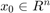 and a final goal set 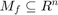 for every final time 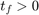, the dynamics can be modeled as a drift control-affine system in 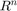 of the form
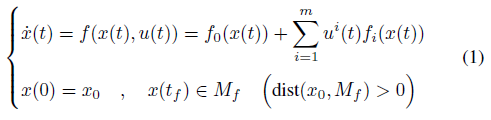
where 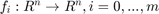 are vector fields. Trajectory optimization can be designed as an Optimal Control Problem (OCP) with penalized state constraints consisting of minimizing the integral cost constraints.
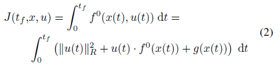
under dynamics (1), among all the controls 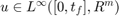 satisfying 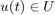 almost everywhere in 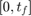. Here, 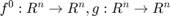 are , represents the norm that is given by a constant positive-definite matrix 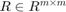, and 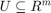 provides control. Function 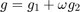 sums up the contributions of original state-depending terms 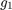 of the cost and of every state constraint violation 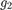 (including collision-avoidance constraints), where 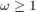 is some penalization weight.
3. Proposed Solution
Assume that 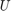 is convex and that for a given 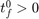 there is some continuous curve 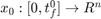 and some control 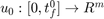, continuously extended in the interval 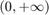. Then Sequential Convex Programming (SCP) can be applied for our problem, which consists of iteratively linearizing the nonlinear contributions of OCP around local solutions, thus recursively defining a sequence of simplified problems, as authors propose in [1]. This provides the Linearized Optimal Control Problem 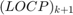 consisting of minimizing the new integral cost
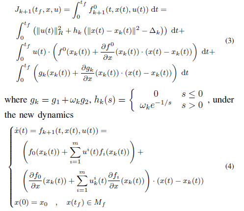
coming from the linearization of nonlinear vector fields, among all controls satisfying almost everywhere in , where 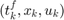 is a solution for the linearized problem at the previous iteration, i.e. 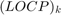, continuously extended in the interval 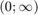. The authors claim in [1] that under these assumptions, at each iteration 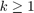, the problem has at least one optimal solution. Once at some iteration is solved, hard trust-region constraints can be checked and, if satisfied, the relative error between the original cost/dynamics and their linearized versions can be evaluated as the ratio
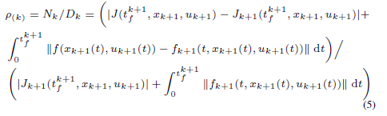
4. GuSTO Algorithm
A new general SCP scheme, named GuSTO (Guaranteed Sequential Trajectory Optimization), has been proposed in [1] to solve OCP:
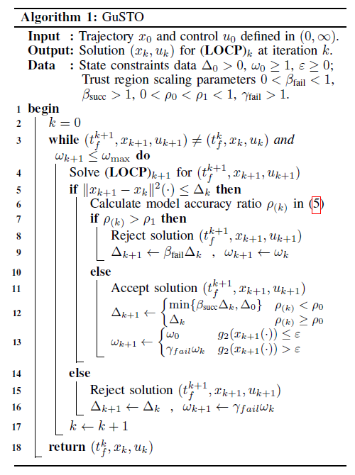
The authors in [1] provide the proof of the convergence of GuSTO to a stationary point in the sense of the Pontryagin Maximum Principle.
5. Data Sources and Functions
Data Initialization. Given initial and desired goal points and headings as [x,y,theta], the maximum number of iterations and initial time guess. 2 different methods for the initial trajectory can be selected: 1 for a straight line and 0 for a middle point between initial and desired goal points.
clear all clc N=41; init=[0;0;0]; goal=[3;3;3]; maxIterations=50; initTimeGuess=5; initTrajMethod=1; for GlobalIndex=1:10
Algorithm execution parameters were partially extracted from [1], the remaining values were obtained from experiments
delta0=10000; delta=delta0; omega0=1; omegaM=1.0e10; omega=omega0; rho0=0.4; rho1=0.9; rhok=0; betaS=2; betaF=0.5; gammaF=5; epsilon=1.0e-6; convergence_threshold=0.1; ind=0;
Robot Description. A simple 3D Dubin's Car model has been selected for the simulation, providing opportunity to focus on the new GuSTO algorithm rather than on familiar, but heavy codes for more complex robot models. 3D model dynamics can be described as
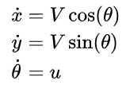
where 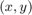 is the car's position, is the heading, the car is moving at a constant speed 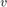, and the turn rate control 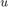 is bounded. The function DubinsCar() creates an object of class DubinsCar with the subfunctions fDynamic(), ADynamic(), BDynamic(), CostTrue(), InitializeModelParams(), UpdateModelParams(), DynamicConstraints() and ObstacleAvoidanceLinearized() .
model=DubinsCar();
World Description. The function GenerateObstacles() creates obstacles as circles between initial and desired goal points with random center and radius, not allowing any overlaps. In order to simulate algorithm with different parameters for the same initial data, generated matrix world can be saved and retrieved from the .mat file.
world=GenerateObstacles(init,goal,GlobalIndex-1,0.5); save('TheWorld.mat','world'); %load('TheWorld.mat','world');
Warning: Area is too confined, can not fit all obstacles. Obstacle number changed to 7
Problem Description. For the given robot and world descriptions, the task is to find the path that moves the robot gradually from the given start point and heading to the desired goal point and heading while never touching any obstacle with the minimum total control cost. We can define total integral cost as sum between control cost and all the penalties in order to get our original OCP as in (1)-(2). The function GuSTOProblem() creates an object of class GuSTOProblem with the subfunctions InitialTrajectory(), ConvergenceMetric(), TrustRegionRatio(), ConvexIneqSatisfied(). The function GuSTOSolution creates an object which contains all results of iteration 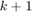
Problem=GuSTOProblem(init,goal,N,world); Solution=GuSTOSolution(Problem,model,initTrajMethod,initTimeGuess);
Collision Avoidance. The keep-out zone constraints are generally non-convex, which prevents from using them in a convex optimization. To circumvent the presence of these non-convex constraints, a sequential convex optimization approach is used [3]. In this project equations 12(a), 12(b) and 12(c) in [2] from [3] were implemented in the subfunction ObstacleAvoidanceLinearized() of DubinsCar class for calculating the signed distance between robot and obstacles.
6. Implementation of GuSTO
[model.f, model.A, model.B]=InitializeModelParams(model,Problem, Solution.traj); Problem.obstacleTolerance=delta*0.8+model.clearance; while ind<maxIterations [model.f model.A]=UpdateModelParams(model,Problem, Solution.traj); cvx_begin quiet variables Tff X(model.xDim,Problem.N) variable U(model.uDim,Problem.N-1) minimize (ObjectiveFunction(X,U,Solution.traj,Problem,model,omega,delta)) subject to for i=1:model.xDim X(i,1)-Problem.init(i)==0;%state init constraints X(i,Problem.N)-Problem.goal(i)==0;%state goal constraints end for k=1:N-1 DynamicConstraints(model,Problem,X,U,Tff,Solution.traj,k,0)==0 U(1,k)-model.uMax(1)<=0 %control max bound constraints model.uMin(1)-U(1,k)<=0 %control min bound constraints end Tff>=0.1 cvx_end Solution.status=cvx_status; if strcmp(cvx_status,'Infeasible') || strcmp(cvx_status,'Failed') warning("GuSTO SCP iteration failed to find an optimal solution"); break end newTraj.X=X; newTraj.U=U; newTraj.Tff=Tff; newTraj.dt=Tff/(size(X,2)-1); convergence=ConvergenceMetric(Problem,newTraj,Solution.traj); maxv=-Inf; for k=1:Problem.N maxv=max(norm(newTraj.X(:,k)-Solution.traj.X(:,k))^2,maxv); end if maxv<=delta rhok=TrustRegionRatio(Problem,model,newTraj,Solution.traj); if rhok>rho1 Solution.accepted=false; delta=betaF*delta; else Solution.accepted=true; if rhok<rho0 delta=min(betaS*delta,delta0); end if ConvexIneqSatisfied(Problem,model,newTraj,Solution.traj,epsilon)==false omega=gammaF*omega; else omega=omega0; end end else Solution.accepted=false; omega=gammaF*omega; end if Solution.accepted Solution.traj=newTraj; plot(Solution.traj.X(1,:),Solution.traj.X(2,:),'--g','HandleVisibility','off') hold on else plot(newTraj.X(1,:),newTraj.X(2,:),'--r','HandleVisibility','off') end Problem.obstacleTolerance=delta/8+model.clearance; ind=ind+1; Solution.iterations=ind; if omega>omegaM warning("Omega_max exceeded") break end if Solution.accepted==false continue end if convergence<=convergence_threshold if ConvexIneqSatisfied(Problem,model,newTraj,Solution.traj,epsilon) Solution.success=true; if Solution.success %algorithm converged %disp('GuSTO converged') break end end end end


Warning: GuSTO SCP iteration failed to find an optimal solution


7. Output
For demonstration purposes, each accepted solution is being plotted in dashed green line and every unaccepted in dashed red line. The function Output() visualizes initial and desired goal points, arrows showing theta direction, obstacles, final accepted trajectory (thick blue) and number of iterations in the title of the plot.
Output(Solution,model,init,goal,world)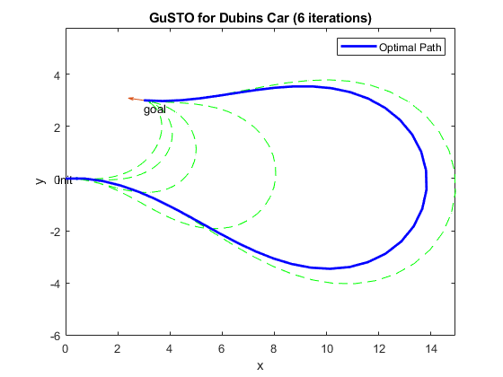 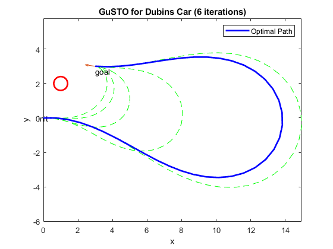 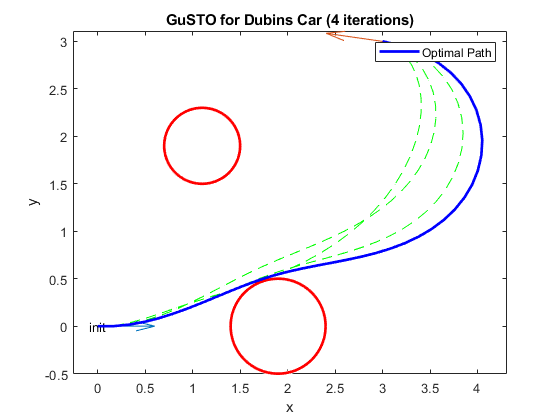 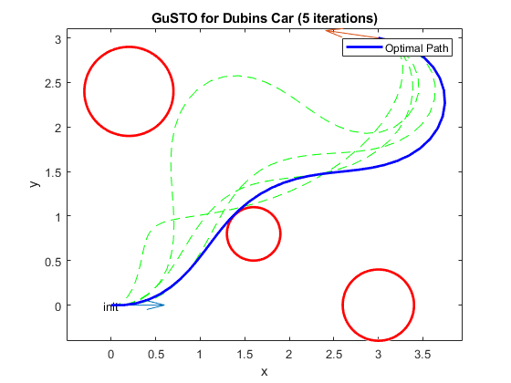 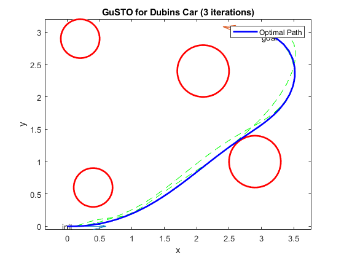 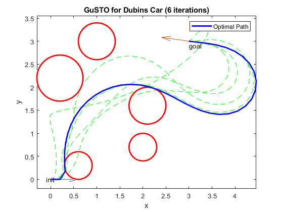 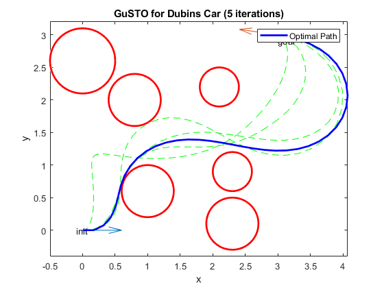
Warning: Ignoring extra legend entries.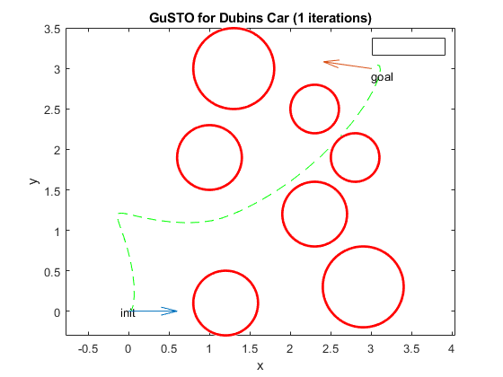 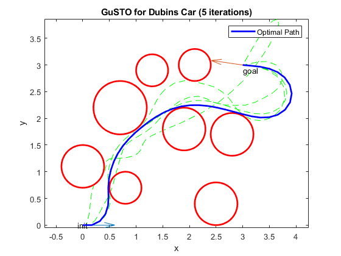 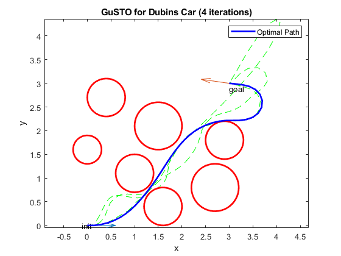
end
8. Analysis and Conclusions
In this project proposed GuSTO algorithm was implemented in Matlab and various simulations were accomplished utilizing Dubin's Car model dynamics. GuSTO easily manages avoiding obstacles on 2-dimensional space with relatively small number of iterations and there is no doubt it can be well utilized for more complex robot model dynamics. Linearization of non-convex constraints, such as collision avoidance, provides an advantages for GuSTO compared to other highly efficient techniques. The results demonstrate that this method allows to convexify non-convex constraints by linearized SCP and solve the problem using available convex optimization tools, such as CVX. The algorithm converges relatively fast, proving all of the theoretical conlcusion the authors made in [1].
The results of this project and the paper [1] can not be compared directly due to two main factors:
- The authors used several different robot model dynamics for the main results. Although they implemented the Shooting Method for accelerating convergence and simulated it on the same Dubin's Car model, it requires warm start feature, which is not available in CVX.
- The authors implemented collision avoidance for GuSTO using Bullet Physics engine, which is not available for Matlab.
9. References
- [1] R. Bonalli, A. Cauligi, A. Bylard, and M. Pavone, “GuSTO: Guaranteed sequential trajectory optimization via sequential convex programming” in 2019 IEEE International Conference on Robotics and Automation (ICRA), IEEE, may 2019
- [2] J. Virgili-llop, C. Zagaris, R. Zappulla II, A. Bradstreet, and M. Romano, “Convex optimization for proximity maneuvering of a spacecraft with a robotic manipulator,” in AIAA/AAS Space Flight Mechanics Meeting, 2017.
- [3] Michael Grant and Stephen Boyd. CVX: Matlab software for disciplined convex programming, version 2.0 beta. http://cvxr.com/cvx, September 2013.
- [4] Michael Grant and Stephen Boyd. Graph implementations for nonsmooth convex programs, Recent Advances in Learning and Control (a tribute to M. Vidyasagar), V. Blondel, S. Boyd, and H. Kimura, editors, pages 95-110, Lecture Notes in Control and Information Sciences, Springer, 2008. http://stanford.edu/~boyd/graph_dcp.html.